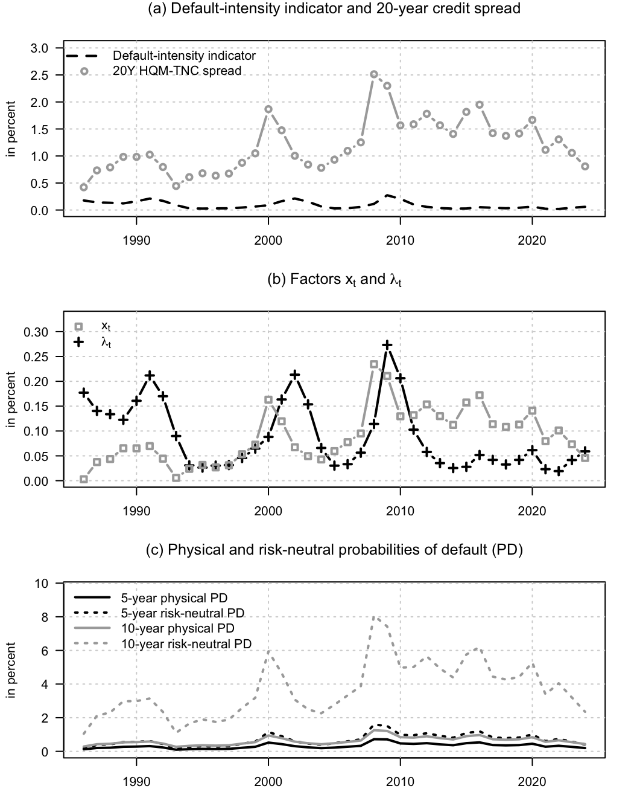
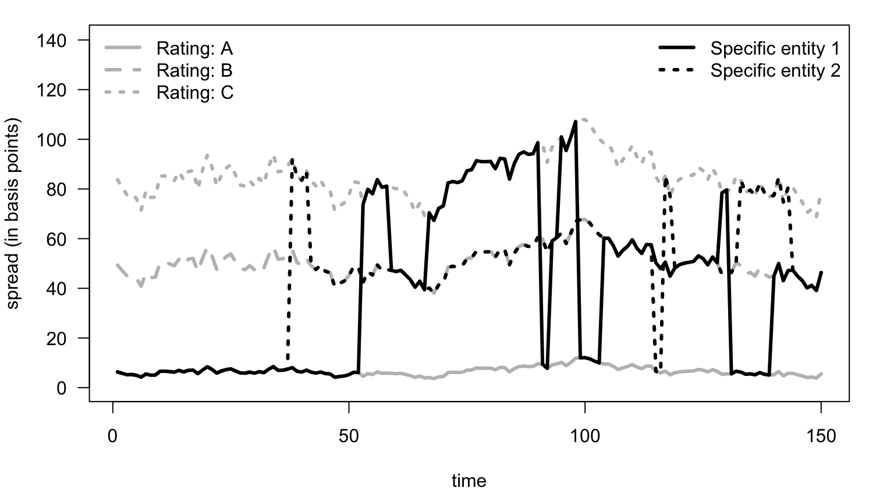
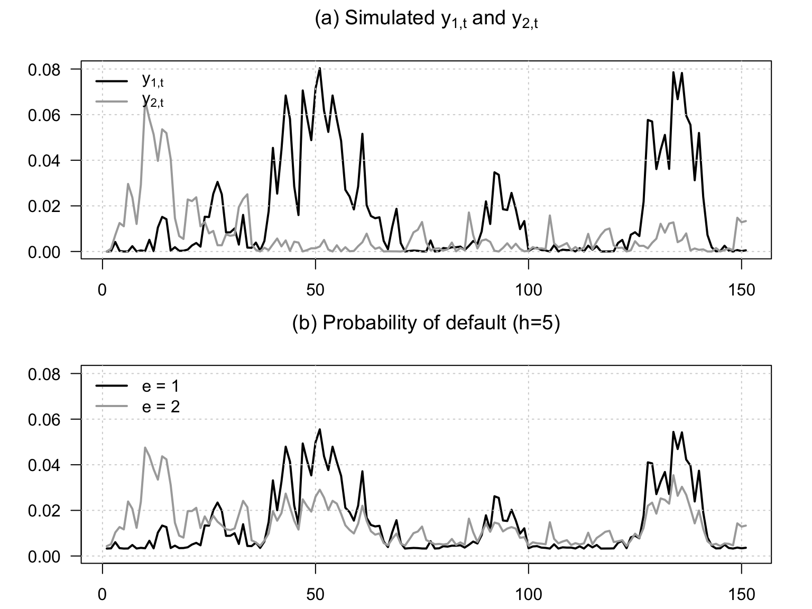
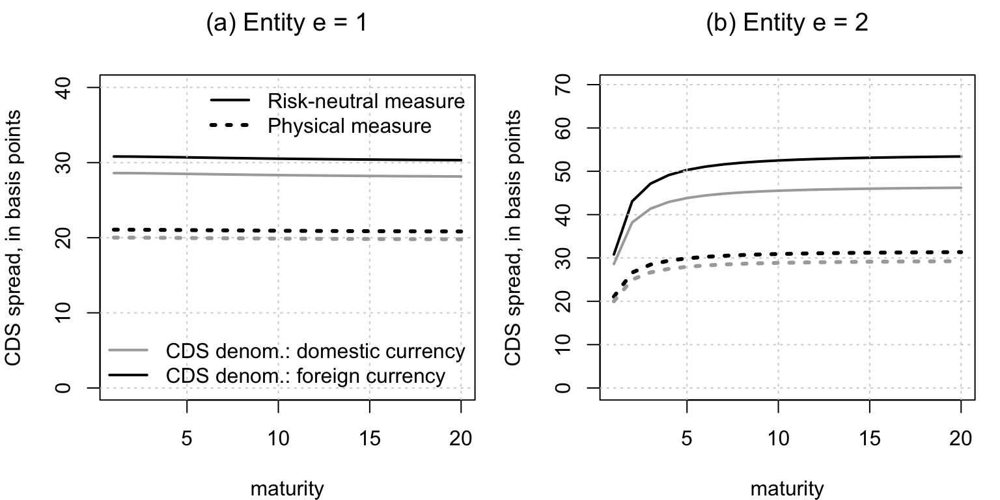
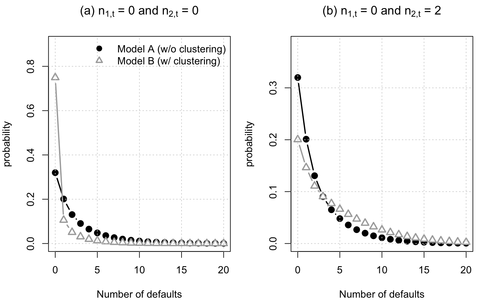
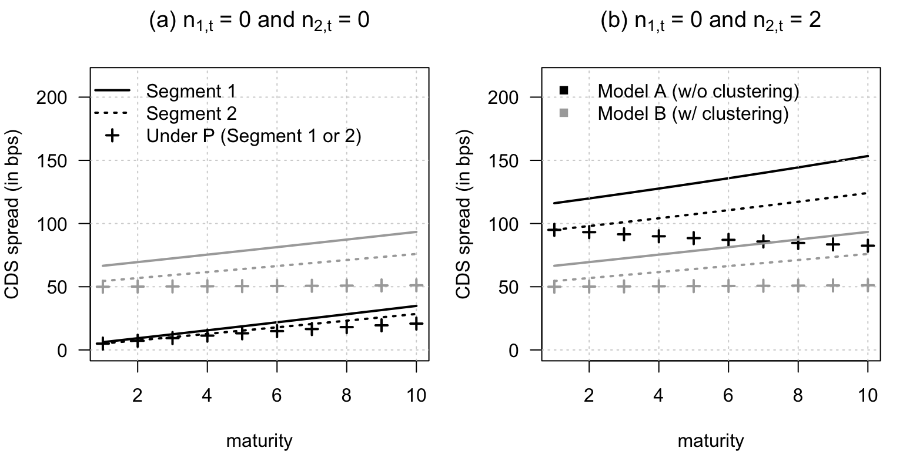
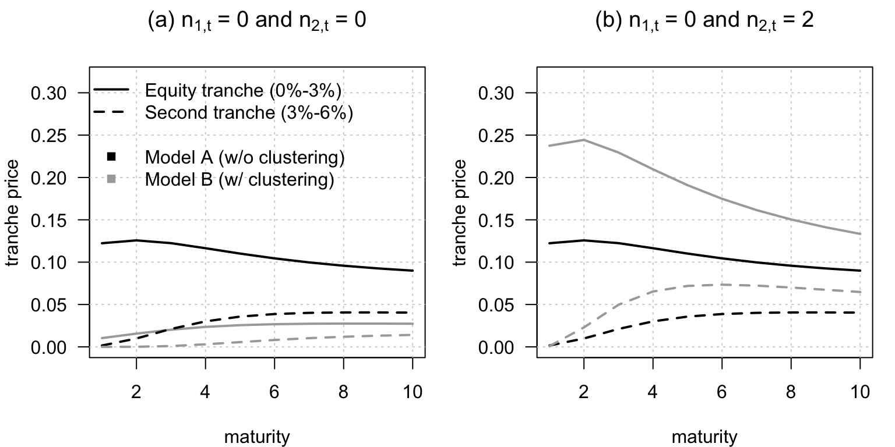

Chapter 10 Credit and liquidity risks
10.1 Standard framework
This example compares standard structural and reduced-form views of credit spreads. The empirical illustration combines a maturity-matched 20-year corporate credit spread with a rescaled business-loan loss indicator. The spread is the difference between the U.S. Treasury’s 20-year High Quality Market (HQM) corporate spot rate and its 20-year Treasury Nominal Coupon-Issue (TNC) spot rate; the source workbooks and methodology are available from the HQM and TNC yield-curve pages. The credit-loss indicator uses the Federal Reserve Board’s business-loan charge-off rate, rescaled so that its average expected loss corresponds to high-quality U.S. corporate bonds (Amato and Remolona 2003).2
Code
# Purpose: This example compares standard structural and reduced-form views of credit spreads
library(DTAM)
public_spread_file <- "data/Treasury_HQM_TNC_20Y.xlsx"
credit_loss_file <- "data/FederalReserve_HQM_CreditLossProxy.xlsx"
if (!file.exists(public_spread_file)) {
stop("Treasury spread data not found: ", public_spread_file, call. = FALSE)
}
if (!file.exists(credit_loss_file)) {
stop("Credit-loss indicator not found: ", credit_loss_file, call. = FALSE)
}
spread_data <- readxl::read_excel(public_spread_file,
sheet = "Annual 20Y spread",
skip = 6)
spread_data <- data.frame(
year = suppressWarnings(as.numeric(spread_data[[1]])),
HQM_yld = suppressWarnings(as.numeric(spread_data[[2]])),
TNC_yld = suppressWarnings(as.numeric(spread_data[[3]])),
HQM_TNC_spd = suppressWarnings(as.numeric(spread_data[[4]]))
)
spread_data <- subset(spread_data,
year >= 1986 & year <= 2024 &
complete.cases(spread_data))
loss_data <- readxl::read_excel(credit_loss_file,
sheet = "Annual calibrated",
skip = 6)
loss_data <- data.frame(
year = suppressWarnings(as.numeric(loss_data[[1]])),
chargeoff_rate = suppressWarnings(as.numeric(loss_data[[2]])),
expected_loss_bp = suppressWarnings(as.numeric(loss_data[[5]])),
default_intensity_pct = suppressWarnings(as.numeric(loss_data[[6]]))
)
loss_data <- subset(loss_data,
year >= 1986 & year <= 2024 &
complete.cases(loss_data))
credit_data <- merge(spread_data, loss_data, by = "year", all = FALSE)
stopifnot(nrow(credit_data) == 39,
!anyDuplicated(credit_data$year),
all(credit_data$HQM_TNC_spd > 0),
all(credit_data$default_intensity_pct >= 0))
RR <- .6
lambda <- credit_data$default_intensity_pct/100
spd_HQM_TNC <- credit_data$HQM_TNC_spd/100
stopifnot(max(abs(lambda*(1-RR) - credit_data$expected_loss_bp/10000)) < 1e-10)
# The observed spread and model bond both have a 20-year maturity.
H <- 20
make_models <- function(param){
# Specify two-factor VARG model:
mu_x <- exp(param[1])
mu_lambda <- exp(param[2])
rho_x <- exp(param[3])/(1+exp(param[3]))
rho_lambda <- exp(param[4])/(1+exp(param[4]))
nu <- exp(param[5])
# prices of risk:
alpha_x <- exp(param[6])
alpha_lambda <- exp(param[7])
alpha_SDF <- matrix(c(alpha_x,
alpha_lambda),ncol=1)
alpha = matrix(0,2,1)
mu = matrix(c(mu_x,mu_lambda),2,1)
nu = matrix(c(nu,0),2,1)
beta = matrix(c(rho_x/mu_x,(1-rho_lambda)/mu_lambda,0,rho_lambda/mu_lambda),2,2)
model <- list(alpha=alpha,mu=mu,nu=nu,beta=beta)
muQ <- mu / (1 - mu * alpha_SDF)
alphaQ <- alpha * muQ/mu
nuQ <- nu
betaQ <- beta * (matrix(muQ/mu,ncol=1) %*% matrix(1,1,dim(beta)[2]))
modelQ <- list(alpha=alphaQ,mu=muQ,nu=nuQ,beta=betaQ)
return(list(model = model,
modelQ = modelQ,
mu_x=mu_x,mu_lambda=mu_lambda,
rho_x=rho_x,rho_lambda=rho_lambda,
nu=nu,alpha_x=alpha_x,alpha_lambda=alpha_lambda))
}
loss4optim <- function(param){
Models <- make_models(param)
model <- Models$model
modelQ <- Models$modelQ
xi0 <- 0
xi1 <- matrix(0,length(model$alpha),1)
kappa0 <- 0
kappa1 <- matrix(c(0,1-RR),ncol=1)
bond_prices <- compute_AB_classical(xi0=xi0, xi1=xi1,
kappa0=kappa0, kappa1=kappa1,
H=H, # maximum maturity
psi=psi_VARG,psi.parameterization=modelQ)
e <- 2 # e = 1 is for the risk-free yield
b_spd <- bond_prices$b[1,e,H]
a_spd <- matrix(bond_prices$a[,e,H],ncol=1)
# Compute x to have a perfect fit of spreads:
x <- (spd_HQM_TNC - b_spd - a_spd[2]*lambda)/a_spd[1]
# Moments:
mean_Y <- compute_uncondmean_VARG(model)
Var_Y <- compute_uncondvar_VARG(model)
# Penalize negative x values:
penalty_neg_x <- 10000000000*sum(abs(x[x<0]))
# Penalty for distance between empirical and model-implied means:
penalty_mean_distance_lambda <- 1000000000*abs(mean_Y[2] - mean(lambda))
# penalty for average spread:
avg_spd <- b_spd + sum(a_spd*mean_Y)
penalty_mean_spd <- 1000000000*abs(avg_spd - mean(spd_HQM_TNC))
# penalty for stdv of spreads:
stdv_spd <- sqrt(t(a_spd) %*% Var_Y %*% a_spd)
penalty_var_spd <- 10000*abs(stdv_spd - sd(spd_HQM_TNC))
# penalty for stdv of lambda:
a_lambda <- matrix(c(0,1),ncol=1)
stdv_lambda <- sqrt(t(a_lambda) %*% Var_Y %*% a_lambda)
penalty_var_lambda <- 10000*abs(stdv_lambda - sd(lambda))
Phi_Y <- model$beta * matrix(model$mu,2,2)
Var_Y_Y_1 <- rbind(cbind(Var_Y,Phi_Y%*%Var_Y),
cbind(Var_Y%*%t(Phi_Y),Var_Y))
# penalty for autocorrelation of lambda:
T <- length(spd_HQM_TNC)
Autocor_lambda <- cor(lambda[2:T],lambda[1:(T-1)])
a1 <- rbind(a_lambda,0*a_lambda)
a2 <- rbind(0*a_lambda,a_lambda)
cov_lambda_lambda_1 <- t(a1) %*% Var_Y_Y_1 %*% a2
AC_lambda_model <- cov_lambda_lambda_1/stdv_lambda^2
penalty_AC_lambda <- 1000*abs(AC_lambda_model - Autocor_lambda)
# penalty for autocorrelation of spd:
Autocor_spd <- cor(spd_HQM_TNC[2:T],spd_HQM_TNC[1:(T-1)])
a1 <- rbind(a_spd,0*a_spd)
a2 <- rbind(0*a_spd,a_spd)
cov_spd_spd_1 <- t(a1) %*% Var_Y_Y_1 %*% a2
AC_spd_model <- cov_spd_spd_1/stdv_spd^2
penalty_AC_spd <- 1000*abs(AC_spd_model - Autocor_spd)
# Compute loss:
loss <- penalty_neg_x +
penalty_mean_distance_lambda +
penalty_mean_spd + penalty_var_spd + penalty_var_lambda +
penalty_AC_lambda + penalty_AC_spd
return(loss)
}
# Initial values:
rho_x <- .91
rho_lambda <- .2
mu_x <- .0005
mu_lambda <- .0025
nu <- 2.7
alpha_x <- 50
alpha_lambda <- 0.05
param <- log(c(mu_x,mu_lambda,rho_x,rho_lambda,nu,alpha_x,alpha_lambda))
param[3] <- log(rho_x/(1-rho_x))
param[4] <- log(rho_lambda/(1-rho_lambda))
for(i in 1:10){
res.optim <- optim(par=param,
fn=loss4optim,
method="Nelder-Mead",
control=list(trace=FALSE,maxit=2000),hessian=FALSE)
}
param <- res.optim$par
Models <- make_models(param)
model <- Models$model
modelQ <- Models$modelQ
# Compute x_t ------------------------------------------------------------------
xi0 <- 0
xi1 <- matrix(0,length(model$alpha),1)
kappa0 <- 0
kappa1 <- matrix(c(0,1-RR),ncol=1)
bond_prices <- compute_AB_classical(xi0=xi0, xi1=xi1,
kappa0=kappa0, kappa1=kappa1,
H=H, # maximum maturity
psi=psi_VARG,psi.parameterization=modelQ)
k <- 2 # k=1 is for the risk-free yield
b_spd <- bond_prices$b[1,k,H]
a_spd <- matrix(bond_prices$a[,k,H],ncol=1)
x <- (spd_HQM_TNC - b_spd - a_spd[2]*lambda)/a_spd[1]
Y <- cbind(x,lambda)
# Calculate Physical probabilities of default:
kappa1_lambda <- kappa1/(1-RR)
surviv_proba_P <- compute_AB_classical(xi0=xi0, xi1=xi1,
kappa0=kappa0, kappa1=kappa1_lambda,
H=H, # maximum maturity
psi=psi_VARG,psi.parameterization=model)
surviv_proba_Q <- compute_AB_classical(xi0=xi0, xi1=xi1,
kappa0=kappa0, kappa1=kappa1_lambda,
H=H, # maximum maturity
psi=psi_VARG,psi.parameterization=modelQ)
e <- 2 # e = 1 is for the risk-free entity
H1 <- 5
PD_P_H1 <- 1 - exp(surviv_proba_P$B[1,e,H1] + Y %*% surviv_proba_P$A[,e,H1])
PD_Q_H1 <- 1 - exp(surviv_proba_Q$B[1,e,H1] + Y %*% surviv_proba_Q$A[,e,H1])
H2 <- 10
PD_P_H2 <- 1 - exp(surviv_proba_P$B[1,e,H2] + Y %*% surviv_proba_P$A[,e,H2])
PD_Q_H2 <- 1 - exp(surviv_proba_Q$B[1,e,H2] + Y %*% surviv_proba_Q$A[,e,H2])
# nb_periods <- 200
# sim_Y <- simul_VARG(Models$model, nb_periods = nb_periods)
# plot(sim_Y[2,],type="l",lwd=2)
# lines(sim_Y[1,],col="red",lwd=2,lty=3)
par(mfrow=c(3,1))
par(plt=c(.1,.95,.2,.85))
plot(credit_data$year,credit_data$default_intensity_pct,
ylim=c(0,1.2*max(c(credit_data$default_intensity_pct,
credit_data$HQM_TNC_spd))),col="white",
xlab="",ylab="in percent",las=1,
main=expression(paste("(a) Default-intensity indicator and 20-year credit spread",sep="")))
grid()
lines(credit_data$year,credit_data$default_intensity_pct,lwd=2,lty=2)
lines(credit_data$year,credit_data$HQM_TNC_spd,col="dark grey",type="b",lwd=2)
legend("topleft",
legend=c(expression(paste("Default-intensity indicator",sep="")),
expression(paste("20Y HQM-TNC spread",sep=""))),
lty=c(2,NaN),
pch=c(NaN,1),
col=c("black","dark grey"),
lwd = 2,bty = "n",seg.len = 3)
plot(credit_data$year,100*lambda,
ylim=c(0,1.2*max(c(100*lambda,100*x))),col="white",
xlab="",ylab="in percent",las=1,
main=expression(paste("(b) Factors ",x[t]," and ",lambda[t],sep="")))
grid()
lines(credit_data$year,100*lambda,lwd=2,type="b",pch=3)
lines(credit_data$year,100*x,col="dark grey",lwd=2,type="b",pch=0)
legend("topleft",
legend=c(expression(x[t]),expression(lambda[t])),
lty=c(NaN,NaN),
pch=c(0,3),
col=c("dark grey","black"),
lwd = 2,bty = "n")
plot(credit_data$year,100*lambda,
ylim=c(0,120*max(PD_Q_H2)),col="white",
xlab="",ylab="in percent",las=1,
main=expression(paste("(c) Physical and risk-neutral probabilities of default (PD)",sep="")))
grid()
lines(credit_data$year,100*PD_P_H1,lwd=2,lty=1)
lines(credit_data$year,100*PD_Q_H1,lwd=3,lty=3,lend="round")
lines(credit_data$year,100*PD_P_H2,lwd=2,lty=1,col="dark grey")
lines(credit_data$year,100*PD_Q_H2,lwd=3,lty=3,col="dark grey",lend="round")
legend("topleft",
legend=c("5-year physical PD",
"5-year risk-neutral PD",
"10-year physical PD",
"10-year risk-neutral PD"),
lty=c(1,3,1,3),
col=c("black","black","dark grey","dark grey"),
lwd = c(2,3,2,3),bty = "n",seg.len = 3)
10.2 Credit ratings
This example illustrates bond pricing and migration dynamics in a ratings-based framework.
The spectral construction preserves unit row sums and the absorbing default state, but it does not impose non-negativity of every entry of the transition matrix. Under the present calibration, violations larger than \(5\times10^{-5}\) have probability of about \(3\times10^{-7}\) per period.
Code
# Purpose: This example illustrates bond pricing and migration dynamics in a ratings-based
# framework
library(DTAM)
nb.sim <- 150
# Baseline matrix of transition probabilities:
Pi <- t(matrix(c(.95,.03,.02,.0,
.03,.94,.025,.005,
.05,.09,.85,.01,
0,0,0,1),4,4))
K <- dim(Pi)[1] # number of ratings
eig_res <- eigen(Pi)
V <- eig_res$vectors
V <- V[,K:1]
eig_values <- eig_res$values[K:1] # ensure 1 is the last eigenvalue.
# Specify model ----------------------------------------------------------------
# Credit ratings:
model <- list()
model$xi0 <- .02
model$xi1 <- matrix(c(.01,0),ncol=1)
model$kappa0 <- matrix(-log(eig_values),nrow=1)
model$kappa1 <- rbind(0,.2*model$kappa0)
model$V <- V
# Specify y_t's dynamics:
mu <- matrix(0,2,1)
rho <- .9
Phi <- rho*diag(2)
Sigma <- (1-rho^2) * diag(2) # This ensures that Var(y_{i,t})=1.
model$psi.parameterization <- list(mu = mu, Phi = Phi, Sigma = Sigma)
# Simulate Y:
Y <- simul_GaussianVAR(model$psi.parameterization,
nb.sim = nb.sim)
# Price bonds: -----------------------------------------------------------------
res_ratings <- compute_bond_price_Ratings(model,Y,H=10,psi=psi_GaussianVAR)
# Simulate ratings: ------------------------------------------------------------
# flag remains 1 as long as:
# - not all ratings visited
# - a default occur
# - short-lived rating (less than 2 periods)
# <=> max(tau) == K-1
flag <- 1
while(flag==1){
tau1 <- simul_rating_migration(model,Y,tau_ini=1)
if((max(tau1)==K-1)&( sum(abs(diff(tau1[1:(nb.sim-1)])*diff(tau1[2:nb.sim])))==0 )){
flag <- 0
}
}
flag <- 1
while(flag==1){
tau2 <- simul_rating_migration(model,Y,tau_ini=1)
if((max(tau2)==K-1)&( sum(abs(diff(tau2[1:(nb.sim-1)])*diff(tau2[2:nb.sim])))==0 )){
flag <- 0
}
}
# Prepare plot -----------------------------------------------------------------
h <- 5
spreads <- cbind(res_ratings$Risky_bond_spreads[,,h],10)
spds1 <- matrix(NaN,dim(Y)[1],1)
spds2 <- matrix(NaN,dim(Y)[1],1)
for(t in 1:dim(Y)[1]){
spds1[t] <- spreads[t,tau1[t]]
spds2[t] <- spreads[t,tau2[t]]
}
par(mfrow=c(1,1))
par(plt=c(.1,.95,.2,.95))
plot(10000*res_ratings$Risky_bond_spreads[,1,h],type="l",col="grey",lty=1,lwd=3,
ylim=10000*c(0,1.3*max(res_ratings$Risky_bond_spreads[,,h])),
las=1,xlab="time",ylab="spread (in basis points)")
lines(10000*res_ratings$Risky_bond_spreads[,2,h],type="l",col="grey",lty=2,lwd=3)
lines(10000*res_ratings$Risky_bond_spreads[,3,h],type="l",col="grey",lty=3,lwd=3)
lines(10000*spds1,lwd=3)
lines(10000*spds2,lwd=3,lty=3)
legend("topleft",
legend=c(paste("Rating: ",LETTERS[1:(K-1)],sep="")),
lty=c(1:(K-1)),
col=c(rep("grey",K-1)),
lwd = c(rep(3,K-1)),bty = "n")
legend("topright",
legend=c("Specific entity 1",
"Specific entity 2"),
lty=c(1,3),
col=c("black","black"),
lwd = c(3,3),bty = "n")
10.3 VARG
This example simulates default intensities and state variables in the VARG credit model.
Code
# Purpose: This example simulates default intensities and state variables in the VARG credit
# model
library(DTAM)
nb_periods <- 150
# Set the dimensions of the VARG credit system.
# Number of entities (hence dimension of delta):
n.e <- 2
# Number of elements in y:
n.y <- 2 # in the context of this example: two entity-specific factors
# Dimension of w:
n.w <- n.y + n.e
# (w_t = [y_t',delta_t']')
beta.delta.y <- .2
beta.delta <- 1
# Calibrate the common state factors and the default indicators.
mu.y <- .004
nu.y <- .5
mu.delta <- 1
rho.y <- .8
beta.y <- rho.y/mu.y
alpha <- matrix(0,n.w,1)
mu <- matrix(c(rep(mu.y,n.y),
rep(mu.delta,n.e)),n.w,1)
# mu[2] <- .75*mu[1]
nu <- matrix(c(rep(nu.y,n.y),
rep(0,n.e)),n.w,1)
beta <- matrix(0,n.w,n.w)
beta[1,1] <- beta.y
beta[2,2] <- beta.y
beta[3,1] <- beta.delta.y
beta[4,2] <- beta.delta.y
# beta[3,4] <- beta.delta
beta[4,3] <- beta.delta
model <- list(
alpha = alpha,
mu = mu,
nu = nu,
beta = beta
)
# Simulate state variables and default indicators.
w0 <- matrix(0,n.w,1) # Initial state variable
simul_w <- simul_VARG(model,
nb_periods=nb_periods,w0=w0)
# Plot the two entity-specific state factors.
par(mfrow=c(2,1))
par(plt=c(.1,.95,.15,.8))
plot(simul_w[1,],
type="l",ylim=c(0,max(simul_w[1:2,])),lwd=2,
xlab="",ylab="",
main=expression(paste("(a) Simulated ",y[1*','*t]," and ",y[2*','*t],sep="")),
las=1)
grid()
lines(simul_w[2,],col="dark grey",lwd=2)
legend("topleft",
legend=c(
expression(paste(y[1*','*t],sep="")),
expression(paste(y[2*','*t],sep=""))),
lty=c(1,1),
col=c("black","dark grey"),
lwd=c(2,2),bty = "n")
# Reset realized defaults before computing conditional default probabilities.
# Remove defaults:
simul_w[(n.y+1):n.w,] <- 0
# plot(simul_w[3,],type="l",
# ylim=c(0,max(simul_w[3:4,])))
# lines(simul_w[4,],col="dark grey",lwd=2)
h <- 5
res_PD <- compute_proba_def_VARG(model,H=h,indic_delta1 = n.y+1,
X=t(simul_w))
# Plot default probabilities implied by the simulated state variables.
plot(res_PD$PD[,1,h],
type="l",ylim=c(0,max(simul_w[1:2,])),lwd=2,
xlab="",ylab="",
main=expression(paste("(b) Probability of default (",h,"=5)",sep="")),
las=1)
grid()
lines(res_PD$PD[,2,h],col="dark grey",lwd=2)
legend("topleft",
legend=c(
expression(paste("e = 1",sep="")),
expression(paste("e = 2",sep=""))),
lty=c(1,1),
col=c("black","dark grey"),
lwd=c(2,2),bty = "n")
10.3.1 CDS spreads vary with the state variables in the VARG credit model
This example shows how CDS spreads vary with the state variables in the VARG credit model.
Code
# Purpose: This example shows how CDS spreads vary with the state variables in the VARG credit
# model
H <- 20
# Specification of the short-term rate:
model$xi0 <- 0
model$xi1 <- matrix(rep(0,n.w),ncol=1)
# Specification of the recovery rate:
# ( RR_t = exp(- a.0 - a.1'w_t) )
model$mu_R1 <- matrix(0,n.y+n.e,n.e) # one column = one entity
model$mu_R0 <- rep(100,n.e,1)
# SDF specification:
kappa <- 0.3
model$alpha_w <- matrix(c(rep(0,n.y),rep(kappa,n.e)),n.w,1)
# Determine risk-neutral dynamics:
modelQ <- make_VARG_Q(model)
# Determine values of state vector where CDS evaluated:
Ew <- compute_uncondmean_VARG(model)
w <- Ew
w[(n.y+1):n.w] <- 0 # no default
w <- cbind(w,w)
w[,2] <- 2*w[,1]
# CDS pricing ------------------------------------------------------------------
res_cds <- prices_CDS_RFV_VARG(modelQ,H=H,indic_delta1 = n.y+1,
X=t(w))
res_cds_P <- prices_CDS_RFV_VARG(model,H=H,indic_delta1 = n.y+1,
X=t(w))
# Add FX -----------------------------------------------------------------------
model_FX <- model
# Specification of exchange rate:
# (increase in s = depreciation of domestic currency)
model_FX$mu_s1 <- matrix(0,n.y+n.e,1) # one column = one entity
model_FX$mu_s1[(n.y+1):n.w] <- .05
model_FX$mu_s0 <- 0
# Determine risk-neutral dynamics:
model_FXQ <- make_VARG_Q(model_FX)
res_cds_FX <- prices_CDS_RFV_VARG(model_FXQ,H=H,indic_delta1 = n.y+1,
X=t(w))
res_cds_FXP <- prices_CDS_RFV_VARG(model_FX,H=H,indic_delta1 = n.y+1,
X=t(w))
# ------------------------------------------------------------------------------
par(mfrow=c(1,2))
par(plt=c(.2,.95,.2,.85))
for(e in 1:2){
if(e==1){
maint <- expression(paste("(a) Entity e = 1",sep=""))
}else{
maint <- expression(paste("(b) Entity e = 2",sep=""))
}
plot(10000*res_cds_FX$CDS_spreads[1,e,],type="l",
ylim=10000*c(0,1.3*max(res_cds_FX$CDS_spreads[1,e,])),lwd=2,
xlab="maturity",ylab="CDS spread, in basis points",
main=maint)
grid()
lines(10000*res_cds_FXP$CDS_spreads[1,e,],type="l",lwd=3,lty=3)
lines(10000*res_cds$CDS_spreads[1,e,],type="l",lwd=2,lty=1,col="darkgrey")
lines(10000*res_cds_P$CDS_spreads[1,e,],type="l",lwd=3,lty=3,col="darkgrey")
if(e==1){
legend("bottomright",
# legend=c(
# expression(paste(y[i*','*t]," = E(",y[i*','*t],")",sep="")),
# expression(paste(y[i*','*t]," = ",2%*%E,"(",y[i*','*t],")",sep=""))
# ),
legend=c("CDS denom.: domestic currency",
"CDS denom.: foreign currency"),
lty=c(1,1),
col=c("dark grey","black"),
lwd=c(2,2),bty = "n")
legend("topright",
c("Risk-neutral measure",
"Physical measure"),
lty=c(1,3),
col=c("black","black"),
lwd=c(2,3),bty = "n")
}
}
Code
# for(e in 1:2){
# if(e==1){
# maint <- expression(paste("(c) Entity e = 1 (foreign currency)",sep=""))
# }else{
# maint <- expression(paste("(d) Entity e = 2 (foreign currency)",sep=""))
# }
# plot(10000*res_cds_FX$CDS_spreads[1,e,],type="l",
# ylim=10000*c(0,max(res_cds_FX$CDS_spreads[,e,])),lwd=2,
# xlab="maturity",ylab="CDS spread, in basis points",
# main=maint)
# grid()
# lines(10000*res_cds_FXP$CDS_spreads[1,e,],type="l",lwd=2,lty=3)
# lines(10000*res_cds_FX$CDS_spreads[2,e,],type="l",lwd=2,lty=1,col="dark grey")
# lines(10000*res_cds_FXP$CDS_spreads[2,e,],type="l",lwd=2,lty=3,col="dark grey")
# }10.4 Top-down approach
This example illustrates clustering and default-count dynamics in the top-down credit model.
Code
# Purpose: This example illustrates clustering and default-count dynamics in the top-down credit
# model
library(DTAM)
J <- 2 # Number of segments
# Specification of y_t process:
rho <- .9
mu.y <- .002
beta.yy <- rho/mu.y
nu.y <- .25
kappa <- .2
beta_A <- 100
beta_B <- 10
zeta_A <- 0
zeta_B <- 0.45
model_no_cluster <- list(
mu.y = mu.y,
nu.y = nu.y,
alpha.y = 0,
beta.yy = beta.yy,
beta.yn = matrix(0,1,J),
alpha.n = rep(0,J),
beta.nn = matrix(zeta_A,J,J),
beta.ny = matrix(beta_A,J,1),
n_w = J + 1,
xi0 = 0,
xi1 = matrix(c(0,rep(0,J)),J+1,1),
alpha.m = matrix(c(0,kappa,0),J+1,1),
I = rep(100,J)
)
nb_periods <- 200
sim_TopDown <- simul_TopDown(model_no_cluster,nb_periods=nb_periods)
W <- sim_TopDown$all_w
# Construct selection vectors:
e1 <- matrix(0,J+1,1)
e1[1+1] <- 1
e2 <- matrix(0,J+1,1)
e2[1+2] <- 1
H <- 5
max.N <- 20
for(indic_cluster in 0:1){
if(indic_cluster==1){
model_cluster <- model_no_cluster
# Specification with clustering:
model_cluster$beta.nn <- matrix(zeta_B,J,J)
model_cluster$beta.ny <- matrix(beta_B,J,1)
model <- model_cluster
}else{
model <- model_no_cluster
}
# Compute first and second moments of w_t:
EV <- compute_expect_variance(psi_w_TopDown,model,du=1e-5)
EVQ <- compute_expect_variance(psiQ_w_TopDown,model,du=1e-5)
# Situation where the value of y_t differs:
# W <- cbind(EV$Ew,
# EV$Ew + 1*matrix(sqrt(diag(EV$Vw)),ncol=1))
# Situation where the value of n_{2,t} differs:
W <- cbind(EV$Ew,EV$Ew)
W[2:(J+1),] <- 0 # set n to zeros.
W[J+1,2] <- 2
res <- compute_G(model,
W = W,
gamma = matrix(0,J+1,1),
v = e1,
b.matrix = t(matrix(.5+(0:max.N),max.N+1,H)),
H = H,
indic_Q = FALSE,
max_x = 500,
dx_statio = .2,
min_dx = 10^(-5),
nb_x1 = 500)
Probas <- cbind(res[,1,H],
res[,2:(max.N+1),H] - res[,1:(max.N),H])
if(indic_cluster==0){
Probas_no_cluster <- Probas
}else{
Probas_cluster <- Probas
}
}
par(mfrow=c(1,dim(W)[2]))
par(plt=c(.2,.95,.17,.88))
for(i in 1:dim(W)[2]){
if(i==1){
main.t <- expression(paste("(a) ",n[1*','*t]," = 0 and ",n[2*','*t]," = 0",sep=""))
}else{
main.t <- expression(paste("(b) ",n[1*','*t]," = 0 and ",n[2*','*t]," = 2",sep=""))
}
plot(0:max.N,Probas_no_cluster[i,],type="b",pch=19,lwd=2,cex=1.2,
ylim=c(0,1.2*max(Probas_no_cluster[i,],
Probas_cluster[i,])),
main=main.t,
xlab="Number of defaults",ylab="probability")
lines(0:max.N,Probas_cluster[i,],type="b",pch=24,lwd=2,cex=1.2,
bg="white",col="dark grey")
grid()
if(i==1){
legend("topright",
legend=c(
"Model A (w/o clustering)",
"Model B (w/ clustering)"),
lty=c(NaN,NaN),
pch = c(19,24),
col=c("black","dark grey"),
pt.bg = c("black","white"),
lwd=c(2,2),bty = "n")
}
}
10.4.1 Prices CDS index spreads in the top-down model
This example prices CDS index spreads in the top-down model.
Code
# Purpose: This example prices CDS index spreads in the top-down model
H <- 10
# Compute CDS spreads without default clustering.
CDS_no_cluster <- compute_CDS_TopDown(model_no_cluster,
H=H,
W=W,
RR=0)
CDS_P_no_cluster <- compute_CDS_TopDown(model_no_cluster,
H=H,
W=W,
RR=0,
indic_Q = FALSE)
# Compute CDS spreads with default clustering.
CDS_cluster <- compute_CDS_TopDown(model_cluster,H=H,
W = W,
RR=0)
CDS_P_cluster <- compute_CDS_TopDown(model_cluster,H=H,
W = W,
RR=0,
indic_Q = FALSE)
par(mfrow=c(1,2))
par(plt=c(.2,.95,.2,.85))
# Plot both models under two initial default-count states.
for(value_of_w in 1:2){
if(value_of_w==1){
main.t <- expression(paste("(a) ",n[1*','*t]," = 0 and ",n[2*','*t]," = 0",sep=""))
}else{
main.t <- expression(paste("(b) ",n[1*','*t]," = 0 and ",n[2*','*t]," = 2",sep=""))
}
plot(1:H,10000*CDS_cluster[value_of_w,1,],type="l",lwd=2,
ylim=10000*c(0,1.4*max(CDS_cluster[,,],
CDS_no_cluster[,,])),
main=main.t,
xlab="maturity",ylab="CDS spread (in bps)",las=1)
grid()
points(1:H,10000*CDS_P_cluster[value_of_w,1,],lwd=2,cex=1,pch=3)
lines(1:H,10000*CDS_cluster[value_of_w,2,],lwd=2,cex=1,lty=3)
# Overlay the no-clustering benchmark in grey.
points(1:H,10000*CDS_P_no_cluster[value_of_w,1,],lwd=2,cex=1,pch=3,
col="dark grey")
lines(1:H,10000*CDS_no_cluster[value_of_w,2,],lwd=2,cex=1,lty=3,
col="dark grey")
lines(1:H,10000*CDS_no_cluster[value_of_w,1,],lwd=2,cex=1,lty=1,
col="dark grey")
if(value_of_w==1){
legend("topleft",
legend=c(
"Segment 1",
"Segment 2",
"Under P (Segment 1 or 2)"),
lty=c(1,3,NaN),
pch=c(NaN,NaN,3),
col=c("black"),
lwd=c(2,2,2),bty = "n")
}else{
legend("topleft",
legend=c(
"Model A (w/o clustering)",
"Model B (w/ clustering)"),
lty=c(NaN),
pch=c(15),
col=c("black","dark grey"),
lwd=c(2),bty = "n")
}
}
10.4.2 Tranche pricing across attachment points in the top-down framework
This example studies tranche pricing across attachment points in the top-down framework.
Code
# Purpose: This example studies tranche pricing across attachment points in the top-down
# framework
# Maximum maturity of tranche products:
H <- 10
# Segment:
j <- 1
# Under P or Q:
indic_Q <- TRUE
vector.of.a <- c(0,.03,.06)
tranche_no_cluster <- compute_tranche(model_no_cluster,
W = W,
RR = 0.5,
indic_Q = indic_Q,
j=j,H=H,
vector.of.a,
max_x = 500,
dx_statio = .2,
min_dx = 10^(-5),
nb_x1 = 500)
tranche_cluster <- compute_tranche(model_cluster,
W = W,
RR = 0.5,
indic_Q = indic_Q,
j=j,H=H,
vector.of.a,
max_x = 500,
dx_statio = .2,
min_dx = 10^(-5),
nb_x1 = 500)
par(mfrow=c(1,2))
par(plt=c(.2,.95,.2,.85))
for(value_of_w in 1:2){
if(value_of_w==1){
main.t <- expression(paste("(a) ",n[1*','*t]," = 0 and ",n[2*','*t]," = 0",sep=""))
}else{
main.t <- expression(paste("(b) ",n[1*','*t]," = 0 and ",n[2*','*t]," = 2",sep=""))
}
tranche <- 1
plot(tranche_no_cluster$tranche_prices[value_of_w,tranche,],
ylim=c(0,1.3*max(tranche_no_cluster$tranche_prices[,,],
tranche_cluster$tranche_prices[,,])),
type="l",las=1,lwd=2,col="white",main=main.t,
xlab="maturity",ylab="tranche price")
grid()
for(tranche in 1:2){
lines(tranche_no_cluster$tranche_prices[value_of_w,tranche,],
lty=tranche,col="black",lwd=2)
lines(tranche_cluster$tranche_prices[value_of_w,tranche,],
lty=tranche,col="dark grey",lwd=2)
}
if(value_of_w==1){
legend("topleft",
legend=c(
"Equity tranche (0%-3%)",
"Second tranche (3%-6%)",
"",
"Model A (w/o clustering)",
"Model B (w/ clustering)"),
lty=c(1,2,NaN,NaN,NaN),
pch=c(NaN,NaN,NaN,15,15),
col=c("black","black","white","black","dark grey"),
lwd=c(2),bty = "n")
}
}
References
Amato and Remolona (2003, Table 1) report expected losses of 0.61, 2.70, and 7.32 basis points for AAA-, AA-, and A-rated bonds in their longest maturity bucket; their equal-weight average is 3.54 basis points. Let \(c_t\) denote the charge-off rate averaged over the quarters of year \(t\), and let \(\bar c\) be its 1986–2024 average. We set \(\mathrm{EL}_t=(3.54\text{ basis points})c_t/\bar c\), so that the sample average of \(\mathrm{EL}_t\) is exactly 3.54 basis points. We then set the physical default-intensity indicator to \(\lambda_t=\mathrm{EL}_t/(1-\zeta)\), where \(\zeta\) is the recovery rate assumed below. The companion workbook records the source observations and each transformation.↩︎